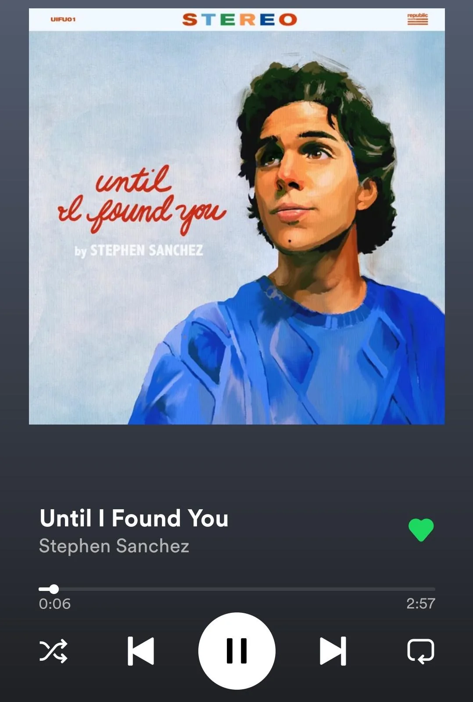
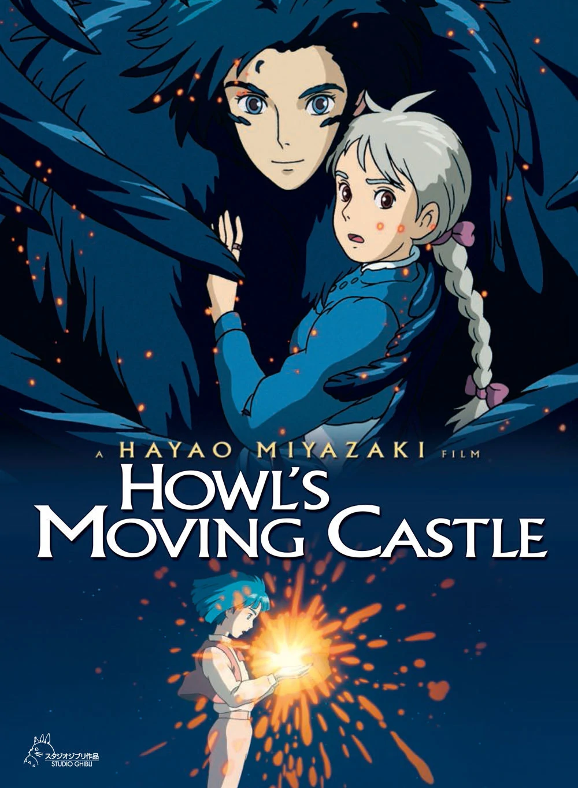
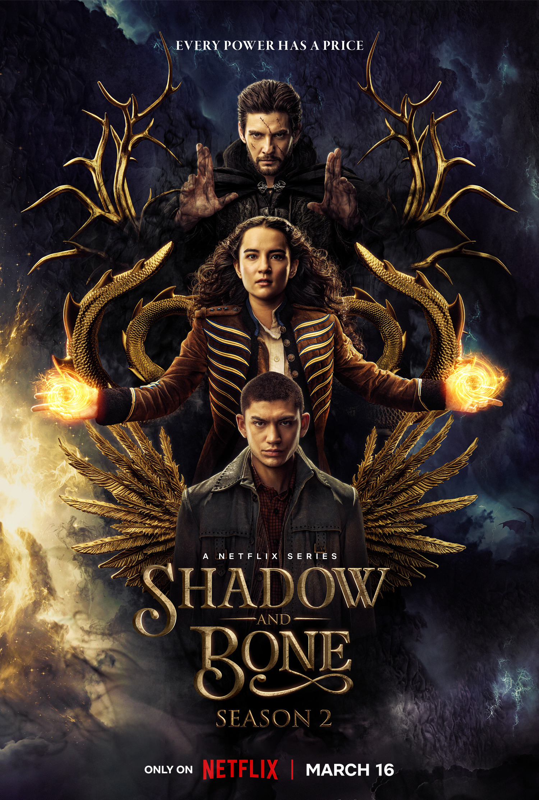
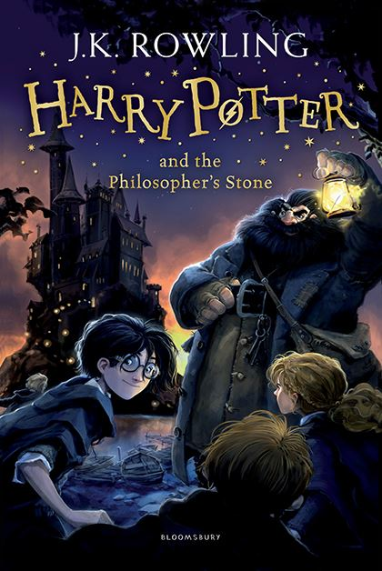

My favourite singer
Kim Tae-yeon born 9 March 1989, known mononymously as Taeyeon, is a South Korean singer. She debuted as a member of girl group Girls' Generation in August 2007, which went on to become one of the best-selling artists in South Korea and one of the most popular K-pop groups worldwide.

My favourite song
Until I Found You is a song by American singer-songwriter Stephen Sanchez. It was released on 1 September 2021 as the lead single from Sanchez's second extended play Easy on My Eyes. Written by Sanchez and produced by Ian Fitchuk and Konrad Snyder, the song peaked at number 23 on the Billboard Hot 100, number 8 on the Australian ARIA chart and at number 14 on the UK Singles Chart.

My favourite anime
Howl's Moving Castle is a 2004 Japanese animated fantasy film written and directed by Hayao Miyazaki.It is loosely based on the 1986 novel of the same name by British author Diana Wynne Jones.The film is set in a fictional kingdom where both magic and early twentieth-century technology are prevalent, against the backdrop of a war with another kingdom.
My favourite movie
Avengers: Endgame is a 2019 American superhero film based on the Marvel Comics superhero team the Avengers. Produced by Marvel Studios and distributed by Walt Disney Studios Motion Pictures, it is the direct sequel to Avengers: Infinity War (2018) and the 22nd film in the Marvel Cinematic Universe (MCU). In the film, the surviving members of the Avengers and their allies attempt to reverse Thanos's actions in Infinity War.

My favourite serie
Shadow and Bone is an American fantasy streaming television series developed by Eric Heisserer for Netflix. It is based on two series of books by Leigh Bardugo set in the Grishaverse, namely, the Shadow and Bone trilogy and the Six of Crows duology. All eight episodes of the first season premiered on April 23, 2021. In June 2021, the series was renewed for a second season, also consisting of eight episodes, which premiered on March 16, 2023.

My favourite book
Harry Potter and the Philosopher's Stone is a fantasy novel written by British author J. K. Rowling. It follows Harry Potter, a young wizard who discovers his magical heritage on his eleventh birthday, when he receives a letter of acceptance to Hogwarts School of Witchcraft and Wizardry. Harry makes close friends and a few enemies during his first year at the school and with the help of his friends, Ron Weasley and Hermione Granger, he faces an attempted comeback by the dark wizard Lord Voldemort, who killed Harry's parents, but failed to kill Harry when he was just 15 months old.